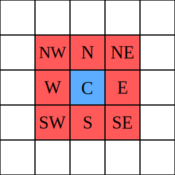

Ogólne zasady gry:
-
Gra rozgrywa się na nieskończonej planszy (płaszczyźnie),
która podzielona jest na kwadratowe komórki
(w naszym przykładzie plansza ma ograniczony rozmiar 40 x 40). - Każda komórka ma 8 sąsiadów - jest to tzw. sąsiedztwo Moore’a*.
- Każda komórka może znajdować się w jednym z dwóch stanów – może być „żywa” (ang. alive) albo „martwa” (ang. dead).
- Stany komórek zmieniają się w wyznaczonej jednostce czasu.
- Stan wszystkich komórek w danej jednostce czasu jest wykorzystywany do obliczenia stanu wszystkich komórek w następnej jednostce.
- Po obliczeniu wszystkie komórki zmieniają swój stan dokładnie w tym samym momencie.
- Stan komórki zależy jedynie od liczby jej żywych sąsiadów.

*sąsiedztwo Moore’a - czyli zbiór ośmiu komórek, które otaczają
komórkę centralną. Sąsiadem będzie zatem każda komórka
granicząca z centralną komórką krawędzią bądź wierzchołkiem.
Do tego sąsiedztwa nie należy komórka centralna.